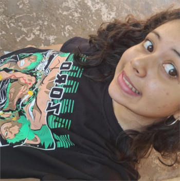
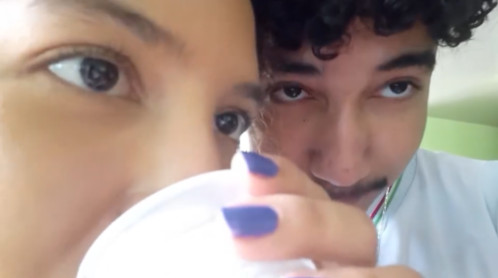

NOSSOS FÃS

SARINHA
Oii Juju, queria te dar um feliz aniversário, lhe desejar tudo de bom na sua vida, nos conhecemos a pouco tempo mas desde que te conheci já me encantei com seu jeitinho, tão gentil e fofa, você é cheia de luz Ju, uma menina muito especial e carismática, espero que sua vida seja muito feliz e que você consiga alcançar suas metas, você merece somente as coisas boas desse mundo, fico muito feliz de te conhecer, Feliz vida jujubinha

SIMON
Olá Juliana, sou "namorado" do seu namorado, não lhe conheço muito bem porém pelo o que seu macho diz você é uma pessoa incrÃvel e sortuda. Coloque o Luiz na linha, prende ele no porão 🙄
Feliz nevesaro
SEU NAMOLADO ğŸ¤

Por ultimo mas tambem o menos importante
Meu amor, 16 aninhos né KKKKK
Sinceramente não sei oque escrever, então tentei demonstrar, fiz esse site pra você porque é algo que nunca vai enferrujar, empoeirar, ou se perder, você literalmente esta carregando no bolso todo dia, fiz com muito carinho e atenção, espero que tenha gostado de tudo.
Mas agora sem enrolação vamos para a parte mais importante, feliz aniversário meu amor, esse é so o primeiro que te falo parabéns, ainda vão vir milhares e milhares, pode ter acontecido as piores coisas, eu posso ter os melhores motivos, mas ainda sim vou torcer sempre por você, sou infinitamente grato a Deus por ele ter botado você na minha vida de novo, a melhor pessoa que ja conheci, fala que eu sou doce e carinhoso mas eu também vejo tudo isso em você, talvez ate mais que eu, o seu coração é puro e sua alma é de criança, o seu brilho me cega de paixão porque você é o sol que ilumina minha vida diariamente, minha namorada, minha melhor amiga, eu te amo e espero que você aproveite o seu aniversario, e que ele seja maravilhoso em todos os sentidos